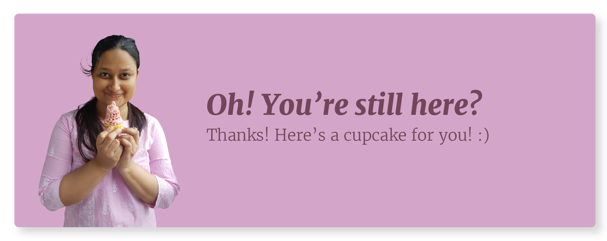

About Me
I was born in West Bengal and brought up in Bhopal. Currently in Bangalore, and working at Samsung RnD for past 4 years. I like being challenged at work, and believe in designing to detail. I have a soft spot for cute things and I love Shinchan!
When I am not working, you will find me day-dreaming, watching satisfying videos, or vibing on a bollywood dance number.
A tenderfoot Baker
Working from home has given all of us an opportunity to persue something which we always wanted to do. In this lockdown, I tried my hands on baking, and no matter how much I have baked in this while, I am unlearning and relearning every single time. Why you so tough, baking? Here's a glimse of that!

Brushlettering Bonanza!
I picked up hand lettering as a hobby when I was in 8th grade to improve my handwriting. Ever since, I have been trying to copy and create beautifully written words. I also tried some brush lettering, it is so satisfying to play with the fluidity of brush pens and have fun. On funny side, I seemed to have forgotten how to write in normal cursive that we were taught in elementary school!

Art works
Recently, I got a Samsung Note device and have been exploring to create digital artworks on my phone. Apart from digital sketching, I also love water colours and paper origami. Here are few of my recent artworks.

